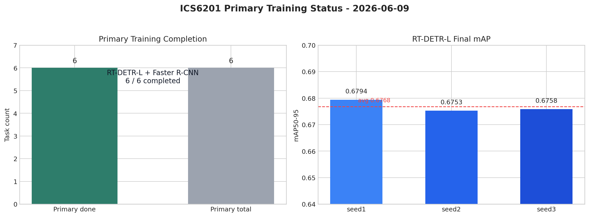

用可复核的数字描述贡献，也明确数字不能证明什么。
从问题到验证的工程闭环

数据、脚本、验证和核心结果
项目概述
目标：用 6 种目标检测模型在 3 套无人机数据集上进行对比实验，找出最适合无人机黑飞检测的方案。
基本信息：
| 项目 | 详情 |
|---|---|
| 任务 | 单类（drone）目标检测 |
| 检测类别 | 0: drone |
| 模型数量 | 6 个（YOLOv8n, YOLOv10n, YOLO11m, RT-DETR-L, Faster R-CNN R50-FPN, DDW-YOLO） |
| 每个模型运行 | 3 个随机种子（seed=1,2,3），共计 18 次训练 |
| 服务器 | CPU: [redacted]，GPU: [redacted] |
| GPU | 8× NVIDIA H200 (141GB HBM3e) |
| 存储 | GPFS 共享存储 [redacted]，两台机器相同路径 |
| 项目路径 | [redacted-path]/project-root/ |
| 当前环境 | conda env fly（PyTorch 2.5.1+cu121 + Ultralytics + Detectron2） |
一、数据集
数据来源
| 数据集 | 格式 | train | val | test | 合计 |
|---|---|---|---|---|---|
| DUT Anti-UAV Detection | VOC XML | 5,200 | 2,600 | 2,200 | 10,000 |
| DroneDetectionDataset | VOC XML | 46,301 | 5,145 | 2,625 | 54,071 |
| ARD-MAV | 视频+XML | 85,997 | 10,749 | 10,751 | 107,497 |
| 总计 | YOLO | 137,498 | 18,494 | 15,576 | 171,568 |
数据准备流程
- 准备原始 zip → 按数据集授权方式下载到本地
raw_zips/；数据不进入 Git - 合并分卷 →
cat ARD-MAV_Glad.zip.part-* > ARD-MAV_Glad.zip - VOC→YOLO 转换 →
scripts/prepare_rgb_yolo.py（DUT + DroneDet） - ARD-MAV 快速抽帧 →
scripts/prepare_ard_mav_fast.py（60 个视频一次性批量导出帧，10-20 分钟） - COCO 格式 →
scripts/prepare_rgb_coco.py（给 Detectron2 用）
关键经验
- ARD-MAV 原始脚本逐帧调用 ffmpeg（107K 次），预估 18 天 → 改为每视频一次性全帧导出，10-20 分钟完成
- GPFS 共享存储 I/O 延迟高，大量小文件
rmtree可能超时 → 数据准备避免--clear ls ardmav_*匹配 86K 文件会参数溢出返回 0 → 用 Python glob 或 find 统计
二、环境搭建与踩坑
Conda 环境安装（CPU 机器有外网，安装到共享存储）
conda create -n fly python=3.12 -y
conda activate fly
PIP_CONSTRAINT="" pip install torch torchvision --index-url https://download.pytorch.org/whl/cu121
PIP_CONSTRAINT="" pip install ultralytics pyyaml
PIP_CONSTRAINT="" pip install opencv-python-headless # GPU 无 libGL
PIP_CONSTRAINT="" pip install --no-build-isolation 'git+https://github.com/facebookresearch/detectron2.git'
激活：source [redacted-path]/project-root/activate_fly.sh
踩坑记录
| 问题 | 原因 | 方案 |
|---|---|---|
libGL.so.1 缺失 |
GPU 机器无 GUI 库 | 换 opencv-python-headless |
| pip constraint 冲突 | NVIDIA 内部 constraint 锁定 torch 版本 | PIP_CONSTRAINT="" 覆盖 |
| detectron2 安装失败 | pip 隔离环境无 torch | --no-build-isolation |
SSH Permission denied |
无密钥 | CPU 端生成 ed25519 密钥，通过共享存储加到 GPU authorized_keys |
| Faster R-CNN 权重下载失败 | GPU 机器无外网 | CPU 端预下载 pretrained_weights/faster_rcnn_R_50_FPN_3x.pkl（160MB） |
| Faster R-CNN 训练 NaN | batch=4 太小梯度不稳定 | batch 改 32 |
| DDW-YOLO 训练报错 | Ultralytics Muon optimizer 要求 2D 参数，DDW 自定义模块 ECA/BiFPN 有 1D/3D 参数 | 改用 AdamW 或 SGD optimizer |
CUDA_VISIBLE_DEVICES 未生效 |
PyTorch 2.5.1 CUDA 12.1 与系统 CUDA 13.1 驱动版本不一致 | 改用 conda env ai（PyTorch 2.11 CUDA 13.1） |
master.sh 验证失败后直接退出 |
set -euo pipefail + 验证非零退出码 |
关键命令前加 set +e，后恢复 set -e |
三、脚本体系
新建脚本
| 文件 | 功能 |
|---|---|
scripts/auto_config.py |
自动检测可用 GPU 数量、型号、显存 |
scripts/parallel_launcher.py |
多 GPU 并行训练启动器，将任务分配到不同卡 |
scripts/validate_pipeline.py |
极小子集全链路验证（环境/数据/训练/keep_alive） |
scripts/summarize_results.py |
从 state 文件和 runs 目录生成对比报告 |
scripts/prepare_ard_mav_fast.py |
ARD-MAV 快速批处理（替代逐帧 ffmpeg） |
master.sh |
一键执行入口 |
activate_fly.sh |
conda 环境激活 |
master.sh 执行流程
STEP 1: 环境检查（Python 版本、GPU 检测、依赖导入）
STEP 2: 数据准备（YAML 生成、COCO 标注）
STEP 3: 冒烟验证（极小子集并行训练，输出 validation_report.md）
STEP 4: 正式训练（parallel_launcher.py，18 任务分配到 GPU）
STEP 5: 结果汇总（summarize_results.py，输出 training_report.md）
STEP 6: Keep Alive（启动 GPU 防回收守护进程）
启动命令
#### 完整流程（留 GPU 0 给其他任务）
./master.sh --gpus 1,2,3,4,5,6,7
#### 仅验证，跳过正式训练
./master.sh --gpus 1,2,3,4,5,6,7 --skip-train
四、验证结果
最终快速验证：14/14 全部通过，总耗时约 5 分钟。
| 检查项 | 结果 | 耗时 |
|---|---|---|
| 8 GPU 检测 | PASS | 5s |
| GPU 选择（物理 GPU 1-7） | PASS | 0s |
| 环境导入 | PASS | 0s |
| 数据准备 | PASS | 0s |
| YOLOv8n 训练 | PASS | 39s |
| YOLOv10n 训练 | PASS | 38s |
| YOLO11m 训练 | PASS | 40s |
| DDW-YOLO 训练 | PASS | 44s |
| RT-DETR-L 训练 | PASS | 56s |
| Faster R-CNN 训练 | PASS | 4min05s |
| 多卡并行 | PASS | 0s |
| Keep Alive | PASS | skipped |
| 端到端计时 | PASS | 5min07s |
五、训练结果与当前状态（2026-06-09 更新）
核心任务完成情况
本轮优先保证的核心任务为 RT-DETR-L 和 Faster R-CNN Detectron2，每个模型 3 个 seed。截止 2026-06-09，6 个核心训练任务已全部完成。2026-07-15 仓库瘦身后不再保存权重和完整逐步日志，只保留结果摘要、RT-DETR results.csv 和提取后的轻量指标表。
| 核心任务 | 状态 | 最终进度 | 最终指标 |
|---|---|---|---|
| rtdetr_seed1 | DONE | epoch 120 | mAP50-95 = 0.67942 |
| rtdetr_seed2 | DONE | epoch 120 | mAP50-95 = 0.67529 |
| rtdetr_seed3 | DONE | epoch 120 | mAP50-95 = 0.67576 |
| faster_rcnn_seed1 | DONE | iter = 2062560/2062560 | bbox/AP = 64.6024 |
| faster_rcnn_seed2 | DONE | iter = 2062560/2062560 | bbox/AP = 64.6664 |
| faster_rcnn_seed3 | DONE | iter = 2062560/2062560 | bbox/AP = 64.4290 |
完整轻量指标见 assets/ics6201_final_metrics_2026-06-07.csv。RT-DETR-L 的 mAP50-95 均值为 0.67682，Faster R-CNN 的原生 Detectron2 bbox/AP 均值为 64.5660。
非核心任务历史状态
| 任务 | 状态 | 说明 |
|---|---|---|
| yolo11_seed1 | DONE | 曾完成；仓库瘦身后不保留输出和权重 |
| yolo11_seed2 | PARTIAL | 旧调度逻辑下 OOM 后中断；checkpoint 已删除，如需补跑应重新训练 |
| yolo11_seed3 | PENDING | 尚未正式启动 |
| ddw_yolo_seed1-3 | PENDING | 尚未正式启动 |
| yolov10_seed1-3 | PENDING | 尚未正式启动 |
| yolov8_seed1-3 | PENDING | 尚未正式启动 |
仓库瘦身后的重跑策略
2026-06-09 的 manifest/checkpoint 恢复方案属于历史执行记录。2026-07-15 清理后，仓库不再包含原始数据和 checkpoint，因此不能直接从旧 last.pt 恢复。如需补跑 secondary，应重新准备数据与初始权重，再使用新版 per-GPU worker launcher 从头训练。
数据准备完成后可先执行 dry-run，检查任务与 GPU 分配：
cd [redacted-path]/project-root
source [redacted-path]/miniconda3/etc/profile.d/conda.sh
conda activate fly
python scripts/parallel_launcher.py \
--mode formal \
--data configs/drone_rgb_abs.yaml \
--gpus 1,2,3,4,5,6,7 \
--target secondary \
--dry-run
确认调度结果无误后，去掉 --dry-run 才会开始训练。只有重新产生 checkpoint 后，recovery_manifest.py 与 --resume-existing 才能再次用于中断恢复。
GPU 使用说明
#### GPU 0 完全空闲，留给其他任务
CUDA_VISIBLE_DEVICES=0 python your_script.py
六、文件索引
| 文件 | 说明 |
|---|---|
master.sh |
一键执行脚本 |
activate_fly.sh |
环境激活 |
DEVELOPMENT_PLAN.md |
开发计划 |
EXECUTION_LOG.md |
详细执行记录 |
validation_report.md |
验证报告 |
training_report.md |
训练结果（训练完成后生成） |
scripts/recovery_manifest.py |
恢复训练 manifest 生成，识别 complete/partial/pending |
scripts/auto_config.py |
GPU 检测 |
scripts/parallel_launcher.py |
多卡并行训练（含进度监控） |
scripts/validate_pipeline.py |
子集验证 |
scripts/summarize_results.py |
结果汇总 |
scripts/prepare_ard_mav_fast.py |
ARD-MAV 快速抽帧 |
scripts/prepare_rgb_yolo.py |
VOC→YOLO 数据准备 |
scripts/prepare_rgb_coco.py |
YOLO→COCO 转换 |
scripts/train_detectron2_fasterrcnn.py |
Faster R-CNN 训练 |
train_scripts/run_ultralytics_task.py |
单次 Ultralytics 训练 |
train_scripts/ddw_modules.py |
DDW-YOLO 自定义模块（ECA + BiFPN） |
models/ddw_yolo11m_p2_bifpn_eca.yaml |
DDW-YOLO 模型定义 |
configs/drone_rgb_abs.yaml |
数据集配置（绝对路径，自动生成） |
assets/ics6201_final_metrics_2026-06-07.csv |
从最终日志提取的 6 个核心任务指标 |
pretrained_weights/ |
本地预训练权重目录，不入库 |
raw_zips/ |
本地原始数据目录，不入库 |
yolo/ |
本地 YOLO 派生数据目录，不入库 |
coco/ |
本地 COCO 派生数据目录，不入库 |
logs/ |
本地运行日志，不入库 |
runs_formal/ |
仅保留已跟踪的小型结果表；权重不入库 |
中断恢复与资源调度
日期: 2026-06-05
目标: 在不破坏当前已产出 checkpoint / 日志 / 指标的前提下，暂停旧 launcher 的继续派发能力，修复调度逻辑，并把正式训练目标调整为优先保证 rt-detr-l 与 faster_rcnn_detectron2 两类任务完成。
0. 当前判断
当前正式训练已经跑起来，但 parallel_launcher.py 的调度逻辑仍有结构性风险：18 个任务在创建时被预先绑定到 GPU，随后用全局线程池运行。这样某个短任务先结束后，线程池会启动下一个排队任务，但该任务可能已经被预分配到一张仍在训练重任务的 GPU 上，从而触发显存冲突或 OOM。
截至最近一次检查，第一批 7 个任务仍在运行：
| 任务 | GPU | 优先级 | 处理策略 |
|---|---|---|---|
rtdetr_seed1 |
1 | Primary | 保留，继续跑或从 checkpoint 恢复 |
rtdetr_seed2 |
2 | Primary | 保留，继续跑或从 checkpoint 恢复 |
rtdetr_seed3 |
3 | Primary | 保留，继续跑或从 checkpoint 恢复 |
faster_rcnn_seed1 |
4 | Primary | 保留，继续跑或从 checkpoint 恢复 |
faster_rcnn_seed2 |
5 | Primary | 保留，继续跑或从 checkpoint 恢复 |
faster_rcnn_seed3 |
6 | Primary | 保留，继续跑或从 checkpoint 恢复 |
yolo11_seed1 |
7 | Secondary | 不主动杀；结束后不再继续派发 secondary |
核心原则：
- 不移动正在被写入的
runs_formal/子目录。 - 不删除任何旧日志、旧 checkpoint、旧
results.csv。 - 先阻止旧 launcher 启动新任务，再修脚本。
- 新恢复脚本默认只保证 primary 任务：
rt-detr-l与faster_rcnn_detectron2。 - Secondary 任务，包括
yolo11、ddw_yolo、yolov10、yolov8，等 primary 完成后再跑。
下图给出本次恢复动作的收益/风险和推荐执行阶段。
1. 立即止血计划
1.1 推荐暂停对象
推荐只暂停旧 launcher，不暂停已经启动的 7 个训练子进程。
原因：
- 训练子进程继续占用 GPU 并写 checkpoint，已有训练进度不会白费。
- launcher 被暂停后，不会继续启动
yolo11_seed2、ddw_yolo_*等后续任务。 - 避免
yolo11_seed1结束后把yolo11_seed2错误派发到 GPU1。
执行方式：
cd [redacted-path]/project-root
LAUNCHER_PID=$(pgrep -f 'scripts/parallel_launcher.py --mode formal')
echo "launcher=${LAUNCHER_PID}"
kill -STOP "${LAUNCHER_PID}"
ps -p "${LAUNCHER_PID}" -o pid,stat,etime,args
验收标准：
parallel_launcher.py的STAT中出现T。run_ultralytics_task.py和train_detectron2_fasterrcnn.py子进程仍在。- GPU1-7 仍有训练负载，GPU0 仍为空。
logs/formal/*.log仍在更新，或至少子进程仍在 GPU 上运行。
1.2 不推荐的暂停方式
不建议直接 kill -STOP 7 个训练子进程，除非必须维护机器或释放资源。
风险：
- 训练完全停止，GPU 仍可能被进程占住。
- 长时间 STOP 后，日志、进程状态、父子进程关系会更难判断。
- 如果后续误杀子进程，可能丢失最后一次 checkpoint 之后的进度。
如果必须全暂停，必须先保存进程快照：
TS=$(date +%Y%m%d_%H%M%S)
mkdir -p logs/recovery_${TS}
ps -eo pid,ppid,stat,etime,args \
| grep -E 'master.sh|parallel_launcher.py|run_ultralytics_task.py|train_detectron2_fasterrcnn.py' \
| grep -v grep \
| tee logs/recovery_${TS}/process_snapshot.txt
nvidia-smi \
| tee logs/recovery_${TS}/nvidia_smi_snapshot.txt
2. 数据保护计划
2.1 活跃目录不搬动
当前活跃输出目录包括：
logs/master_*.loglogs/formal/*.loglogs/state_formal.jsonruns_formal/*runs_detectron2/*
在训练子进程仍在写入时，不移动、不重命名这些目录。尤其不能移动 runs_formal/rtdetr_seed*-2、runs_formal/yolo11_seed1-2 这类 Ultralytics 自动生成目录，否则正在运行的进程可能继续写旧文件句柄，后续恢复也会混乱。
2.2 生成恢复 manifest
新增一个只读扫描脚本或 launcher 子命令，生成 logs/recovery_manifest_<timestamp>.json，记录每个任务的真实进度：
| 字段 | 用途 |
|---|---|
run_key |
例如 rtdetr_seed1 |
model_family |
rtdetr / faster_rcnn / yolo11 |
priority |
primary / secondary |
candidate_dirs |
所有可能的输出目录，例如 rtdetr_seed1、rtdetr_seed1-2 |
canonical_dir |
选中的最佳恢复目录 |
last_epoch_or_iter |
当前训练进度 |
target_epoch_or_iter |
目标训练进度 |
last_checkpoint |
可恢复 checkpoint 路径 |
best_checkpoint |
当前最佳 checkpoint 路径 |
complete |
是否已经完整完成 |
resume_allowed |
是否允许恢复 |
reason |
选择该目录/状态的原因 |
Canonical 目录选择规则：
- 优先选择进度最高的目录。
- 进度相同则选择
mtime最新的目录。 - 必须存在可用 checkpoint，否则只能作为指标参考，不能作为恢复源。
- 不删除非 canonical 目录，只在 manifest 里标记
superseded。
2.3 完成判定规则
rt-detr-l / Ultralytics：
results.csv行数达到目标 epoch，或最后 epoch 达到目标。weights/last.pt存在。weights/best.pt存在则记录为最终评估候选。- 如果不完整但
weights/last.pt存在，进入 resume 队列。
faster_rcnn_detectron2：
model_final.pth存在，或metrics.json中iteration达到目标max_iter。last_checkpoint存在则可恢复。metrics.json记录的iteration低于目标时进入 resume 队列。
3. 调度器修改计划
3.1 修复目标
把旧的“任务预绑定 GPU + 全局线程池”改成“每张 GPU 一个 worker 队列”。
新调度语义：
GPU1 worker: 取任务 -> 绑定 GPU1 -> 跑完 -> 再取下一个任务
GPU2 worker: 取任务 -> 绑定 GPU2 -> 跑完 -> 再取下一个任务
...
GPU7 worker: 取任务 -> 绑定 GPU7 -> 跑完 -> 再取下一个任务
这样哪张卡空出来，哪张卡继续拿下一项任务。任务不再提前固定到未来可能仍忙的 GPU。
3.2 新增参数
scripts/parallel_launcher.py 建议新增：
| 参数 | 默认值 | 作用 |
|---|---|---|
--target primary|all|secondary |
primary in recovery |
控制训练目标 |
--resume-existing |
off | 自动从 canonical checkpoint 恢复 |
--skip-complete |
on | 跳过已完整完成的任务 |
--manifest PATH |
auto | 指定恢复 manifest |
--per-gpu-queue |
on | 启用每 GPU worker |
--start-stagger-sec |
60 |
错开 DataLoader 启动，降低瞬时 I/O / host memory 压力 |
--max-active-primary |
6 |
primary 同时训练上限 |
--allow-secondary-after-primary |
off | primary 完成前禁止 secondary |
train_scripts/run_ultralytics_task.py 建议新增：
| 参数 | 用途 |
|---|---|
--resume-path PATH |
从指定 last.pt 恢复 |
--resume-auto |
根据 manifest 自动恢复 |
--run-dir PATH |
显式指定恢复目录，避免 Ultralytics 自动创建 -2/-3 目录 |
--exist-ok |
明确允许写入同一 run 目录 |
scripts/train_detectron2_fasterrcnn.py 建议新增或确认：
| 参数 | 用途 |
|---|---|
--resume |
使用 Detectron2 checkpointer 恢复 |
--output-dir PATH |
显式指定 seed 输出目录 |
--max-iter INT |
与原 epochs / dataset / batch 一致 |
--eval-only-final |
训练中减少重复验证压力，最终统一评估 |
3.3 任务优先级
Recovery 模式默认只调度 primary：
Primary:
rtdetr_seed1
rtdetr_seed2
rtdetr_seed3
faster_rcnn_seed1
faster_rcnn_seed2
faster_rcnn_seed3
Secondary:
yolo11_seed1/2/3
ddw_yolo_seed1/2/3
yolov10_seed1/2/3
yolov8_seed1/2/3
策略：
- 当前已经在跑的
yolo11_seed1不主动杀。 yolo11_seed1结束后，不再启动任何 secondary。- primary 6 个任务全部完成并通过最终评估后，才允许 secondary 队列。
- 如果 GPU7 空闲，默认也不拿来跑 secondary，除非显式设置
--allow-secondary-after-primary或 primary 已全部完成。
4. 数据读取与 memory-bound 风险控制
训练瓶颈不一定是纯 GPU compute。当前数据量较大，同时启动多个 DataLoader 可能造成：
- host RAM / page cache 压力上升；
- 共享存储随机读放大；
- DataLoader worker 抢 CPU；
- pin memory 与预取队列占用过多内存；
- 多任务同时做 validation 时 I/O 峰值叠加。
4.1 默认安全配置
Recovery primary 阶段建议保持模型训练超参不变，只控制数据读取并发：
| 项 | 建议值 | 目的 |
|---|---|---|
Ultralytics workers |
8 或 12 |
从原 16 降低瞬时 worker 数 |
Detectron2 D2_NUM_WORKERS |
4 或 8 |
降低 host memory 与随机读压力 |
start_stagger_sec |
60-180 |
避免 6 个任务同时初始化 DataLoader |
| image cache | off | 不把全量图像缓存到 RAM |
| final eval | 单独跑 | 避免训练中频繁全量评估叠加 |
说明：
- 降低
workers一般不影响精度，只影响吞吐。 - 不改变
epochs、imgsz、batch、optimizer、seed，避免引入明显精度不可比因素。 - 如果观察到 GPU 利用率长期低于 50% 且
data_time明显升高，再逐步增加 workers。
4.2 监控指标
恢复训练期间每 10-30 分钟检查一次：
nvidia-smi
free -h
iostat -xz 5 3
pidstat -d -p ALL 5 3
判定方式：
| 现象 | 可能原因 | 处理 |
|---|---|---|
GPU 利用率低，data_time 高 |
I/O 或 DataLoader 瓶颈 | 降低并发任务或增加 worker 试探 |
| host RAM 快耗尽 | worker / prefetch 过多 | 降低 workers，关闭 cache |
| H200 显存接近满但 GPU 利用高 | 模型 compute / activation 压力 | 不优先调整数据读取 |
| validation 阶段多个任务同时变慢 | 全量验证 I/O 峰值 | 改成最终统一 eval 或错峰 eval |
5. 恢复执行顺序
Phase A: 冻结旧 launcher
cd [redacted-path]/project-root
LAUNCHER_PID=$(pgrep -f 'scripts/parallel_launcher.py --mode formal')
MASTER_PID=$(pgrep -f 'bash master.sh --gpus 1,2,3,4,5,6,7')
kill -STOP "${LAUNCHER_PID}"
ps -p "${LAUNCHER_PID}" -o pid,stat,etime,args
检查：
nvidia-smi
ps -eo pid,ppid,stat,etime,args \
| grep -E 'run_ultralytics_task.py|train_detectron2_fasterrcnn.py' \
| grep -v grep
Phase B: 生成快照与 manifest
TS=$(date +%Y%m%d_%H%M%S)
mkdir -p logs/recovery_${TS}
cp logs/state_formal.json logs/recovery_${TS}/state_formal.snapshot.json
cp validation_report.md logs/recovery_${TS}/validation_report.snapshot.md
ps -eo pid,ppid,stat,etime,args > logs/recovery_${TS}/process_snapshot.txt
nvidia-smi > logs/recovery_${TS}/nvidia_smi_snapshot.txt
之后运行新增的 manifest 扫描：
TRAIN_ENV=fly python scripts/recovery_manifest.py \
--runs-dir runs_formal \
--detectron-dir runs_detectron2 \
--target primary \
--out logs/recovery_${TS}/manifest_primary.json
Phase C: 修改脚本
修改范围：
scripts/parallel_launcher.pytrain_scripts/run_ultralytics_task.pyscripts/train_detectron2_fasterrcnn.pymaster.sh- 新增
scripts/recovery_manifest.py
不修改当前正在运行子进程依赖的输出目录。脚本文件可以改，因为已启动的 Python 进程不会重新读取这些入口文件。
Phase D: 等当前 7 个任务安全停住或结束
推荐等当前 6 个 primary 任务结束，至少等它们写出稳定 checkpoint。
如果 yolo11_seed1 先结束，由于 launcher 已暂停，不会继续派发 yolo11_seed2。
判断子任务结束：
ps -eo pid,ppid,stat,etime,args \
| grep -E 'run_ultralytics_task.py|train_detectron2_fasterrcnn.py' \
| grep -v grep
当需要终止旧 master / launcher：
kill -TERM "${LAUNCHER_PID}" "${MASTER_PID}"
kill -CONT "${LAUNCHER_PID}" "${MASTER_PID}"
sleep 5
ps -p "${LAUNCHER_PID}" "${MASTER_PID}"
如果仍未退出，再人工确认没有子训练进程后处理。
Phase E: 用新脚本恢复 primary
建议启动命令：
cd [redacted-path]/project-root
TRAIN_ENV=fly \
TRAIN_TARGET=primary \
WORKERS=8 \
D2_NUM_WORKERS=8 \
bash master.sh \
--gpus 1,2,3,4,5,6,7 \
--resume-existing \
--skip-complete \
--no-secondary
期望行为：
- 已完成的 primary 任务跳过。
- 未完成的
rtdetr_seed*从weights/last.pt恢复。 - 未完成的
faster_rcnn_seed*从 Detectron2last_checkpoint恢复。 - GPU0 不参与。
- primary 完成前不启动 secondary。
Phase F: primary 完成后再跑 secondary
只有在 primary 训练和最终评估全部完成后，再启动 secondary：
TRAIN_ENV=fly \
TRAIN_TARGET=secondary \
WORKERS=8 \
bash master.sh \
--gpus 1,2,3,4,5,6,7 \
--resume-existing \
--skip-complete
6. 风险覆盖
| 风险 | 影响 | 规避方式 |
|---|---|---|
| 暂停错 PID | 可能停掉训练子进程或无效 | 用 pgrep -f 'parallel_launcher.py --mode formal' 并核对 ps |
| 旧 launcher 继续派发任务 | 可能撞 GPU / OOM | kill -STOP launcher 后确认 STAT=T |
| 移动活跃 run 目录 | checkpoint / 日志混乱 | 活跃期间只读扫描，不移动不重命名 |
runs_formal/*-2 重复目录误判 |
误跳过或误恢复 | 用 manifest 选择 canonical 目录 |
| checkpoint 半写入 | resume 失败 | 恢复前确认文件大小和 mtime 稳定 |
| 修改 batch / imgsz / optimizer | 影响精度可比性 | primary 恢复阶段不改训练超参 |
| 降低 workers | 可能训练变慢 | 这是吞吐风险，不是精度风险；通过监控再调 |
| 多任务 DataLoader 抢内存/I/O | GPU 利用下降或 host OOM | 错峰启动、降低 workers、必要时限制并发 |
| Detectron2 resume 不完整 | 重复训练或状态错位 | 依赖 last_checkpoint 和 metrics.json 双重确认 |
| Ultralytics resume 新建目录 | 结果分散 | 显式传 --run-dir / --exist-ok 或在 manifest 里追踪 |
| Secondary 抢 primary 资源 | primary 延迟 | recovery 默认 --no-secondary |
7. 验收标准
最低验收：
- 旧 launcher 暂停后没有新的任务被启动。
- 当前 primary 任务 checkpoint 和日志保留完整。
- 新 manifest 能列出每个 primary 的
complete/resume/missing状态。 - 新 launcher 使用 per-GPU worker，不再提前把任务固定到未来 GPU。
- Recovery 模式只调度
rtdetr_seed1-3和faster_rcnn_seed1-3。 - GPU0 始终空闲。
最终验收：
rt-detr-l三个 seed 均完成 120 epoch 或成功从 checkpoint 续训到目标。faster_rcnn_detectron2三个 seed 均完成目标max_iter。- 生成 primary-only 评估报告，包含每个 seed 的最终指标、checkpoint 路径和训练耗时。
- Secondary 任务只有在 primary 完成后才进入调度。
8. 原始文件
- 决策矩阵:
assets/ics6201_recovery_priority_matrix.csv - 计划图:
assets/ics6201_recovery_priority_plan.png
六模型 × 三随机种子是完整实验设计，但公开结果中只有 RT-DETR-L 与 Faster R-CNN 的三个随机种子核心任务全部完成；其余模型不能写成 18 次训练全部完成。两类 AP 采用各框架原生口径，不宜直接横向比较。